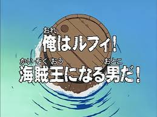
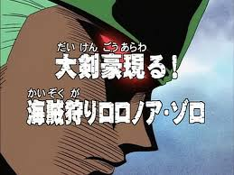
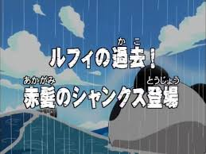

One Piece Episodes
Here’s my journey through One Piece, episode by episode. Click “Read More” to see my full reactions and notes!

Episode 1: I’m Luffy!
Luffy starts his journey and meets new friends.

Episode 2: Enter Zoro
Luffy meets Zoro, the swordsman.

Episode 3: Buggy’s Crew
First antagonist appears.

Episode 4: Adventure Continues
Exploring more of the world and crew goals.